【自作】hogemoji scriptっていうグローバルなプログラミング言語
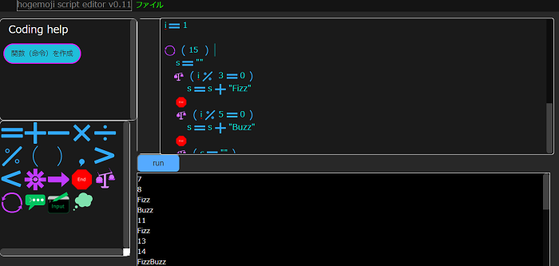久しぶりの記事です。
こんにちは。今日は悪い天気ですねcloudyです。
ちなみにcloudと言えば僕はgoogle driveくらいしか使いません。（そもそも、クラウド事態あまり使わん）
AWSと言うプログラミング言語も書けないので
と書いている間にこれは一体何の記事なのかわからなくなってきたので本題に入ります。
hogemoji script editor v0.01 beta
github : hogemoji_script
どんなプログラミング言語か
だからグローバｒ（（（まず、このプログラミング言語の最大の特徴はプログラミングを画像（絵文字もどき）で行うことです。
まあ「テキストプログラミング言語」と「ビジュアルプログラミング言語」が組み合わさったみたいなやつです
絵文字はこんな感じです。
この絵文字（命令）は何を表しているかわかりますか？
そう、表示（print）です。分かりましたか？分かりましたよね？ね？
とまあ絵文字を使うことで視覚的にプログラミングできるのがメリットです。
メリット・デメリット
では見ていきましょう。メリット
- 直感でプログラミングでき、学習難易度が低い。
- マウスの助けを借りてプログラミングできるのでキーボードを打つことが遅い人にはいいかもしれない。
- ソフトをインストールしなくてもブラウザで簡単にできる。
デメリット
- v0.01 betaもあり、バグがあるかもしれない。
- エラーが実装されていない。（致命的）
- ほかのプログラミング言語で実装されている基本的な文法などが実装されていない場合がある。
- 対応言語が日本語だけ
こんな感じでしょうかまあ多少主観も含まれていますが。
メリットに関しては絵文字を使用し、キーボードをあまり使わずにでき、ブラウザで手軽にできるので初心者向けって感じかもしれません。
デメリットに関してはまだ実装できていない部分が多いという印象です。
エディタの使い方
エディタとか↓
hogemoji script editor v0.01 beta
github : hogemoji_script
絵文字の打ち込み
①エディタの入力ボックスにマウスを置く
②絵文字ボックスから入力したい絵文字をクリックする
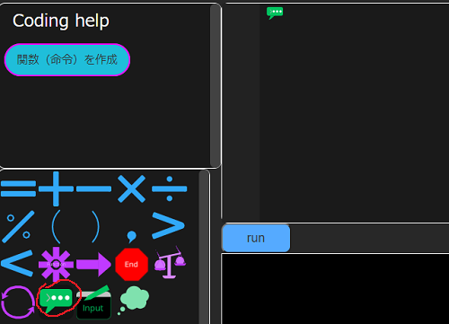
すると絵文字が入力されます。普通の文字を入力するときはそのまま入力します。
保存・ファイルを開く
ファイルを保存するときは、[ファイル] > [保存] をクリックすればいいです。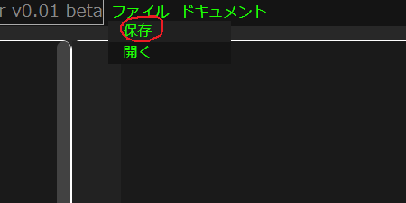
①ファイルを開く場合は、まず [ファイル] > [開く] をクリックします。
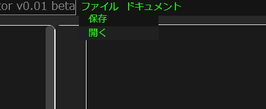
②こんな感じのポップアップが出てくるので、ファイルをドロップするか、ファイルを選択してください。
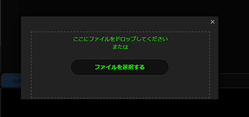
基本的な文法と例
まずはみなさんおなじみのhello,world!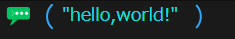
はい、簡単ですね!生まれた赤ちゃんでもわかりそうです!
（「生まれた赤ちゃん」 = 「hello,worldした赤ちゃん」というくそしょうもないギャグ）
関数の文法は
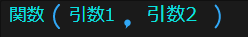
変数宣言
どんどん行きましょう。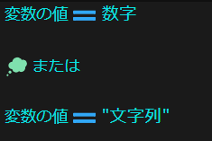
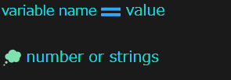
条件文
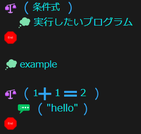繰り返し文
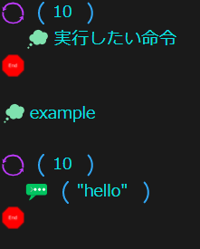関数宣言
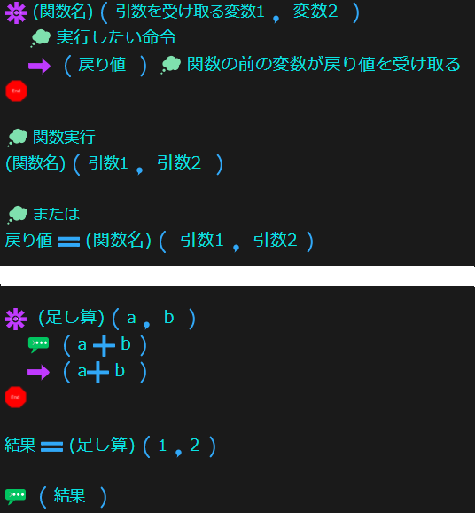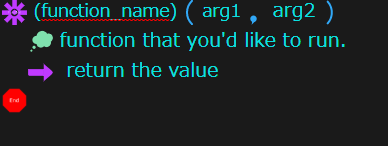
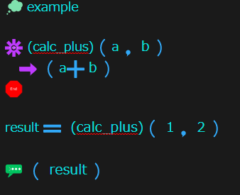
コメント
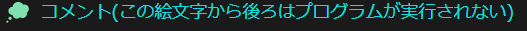関数一覧
文字表示 / print
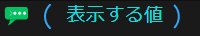文字入力 / input
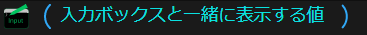文法は以上です。
TODO
エラーを実装構文を追加
ドキュメントを充実させる
GUIに対応させる